Demon Slayer is about people and demons' fight. And in key roles from people are Tanjiro Kamado, Nezuko Kamado, Inosuke Hashibira, Zenitsu Agatsuma. Also some of the demons are in key roles. They are Muzan Kibutsuji and from Lower and Upper Ranks. Lower and Upper rank demons called Twelve Kizuki. There are also have Hashiras. And only Hashiras can kill Twelve Kizukies. That is why they called Hashiras. Other informations are down, you can see more information with pictures.
| N | Pics | Infotmatoins |
|---|---|---|
| 1 | 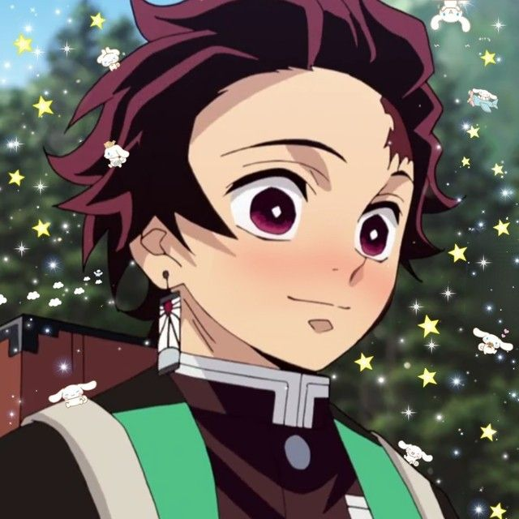 | Tanjiro Kamado (竈門 炭治郎, Kamado Tanjiro) is the oldest son of a charcoal-seller. His entire family was massacred by Muzan Kibutsuji while he was selling charcoal, with only his sister Nezuko surviving. His goal is to find a cure for her and turn her back into a human, and it is to this end that he decides to join the Demon Slayer Corps. He initially trained under Sakonji Urokodaki |
| 2 | 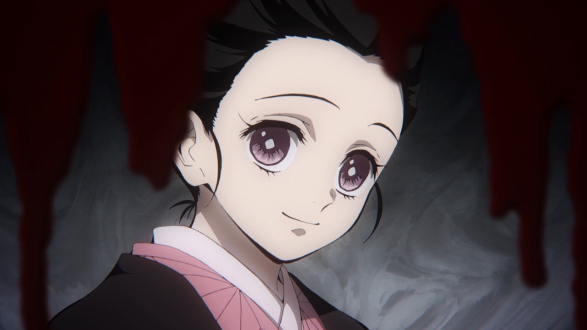 | Nezuko Kamado (竈門 禰豆子, Kamado Nezuko) is the daughter of a charcoal-seller and Tanjiro's younger sister who was turned into a demon. Despite Muzan's assumption that he killed them all in his attempt to sire a sun-resistant demon, Nezuko survived as a demon with her mind mostly gone. However, she retained enough of her memories to keep herself from killing Tanjiro. Due to two years of hypnotic conditioning by Urokodaki, Nezuko regards all humans as her family and will mercilessly attack any demon that threatens them. |
| 3 | 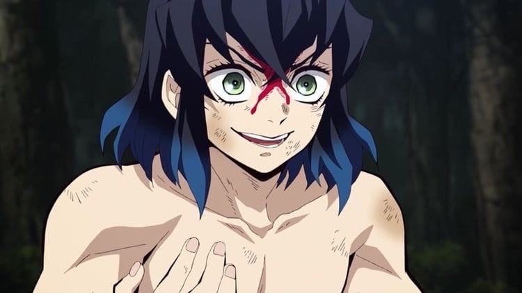 | Hashibira Inosuke. A young boy who was raised by his mother Kotoha Hashibira for a short time until she was murdered by the Upper Moon Two, Doma. After she sacrificed herself to save his life, he was raised by wild boars. Inosuke Hashibira (嘴平 伊之助, Hashibira Inosuke) uses a self-taught style called "Beast Breathing" (獣の呼吸, Kedamono no kokyū), along with two serrated swords in battle. When he gets new swords, he purposely makes them serrated in order to match his preference and fighting style (much to the swordsmith's anger). |
| 4 | 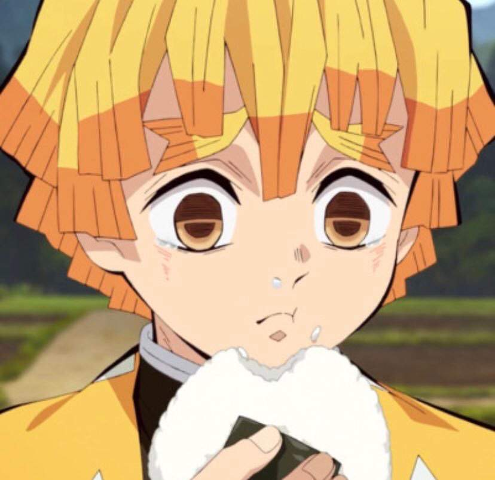 | Agatsuma Zenitsu. An extremely cowardly boy who was forced to join the Demon Slayer Corps at around the same time as Tanjiro to pay for his debts, Zenitsu Agatsuma (我妻 善逸, Agatsuma Zen'itsu) trained in the "Thunder Breathing" (雷の呼吸, Kaminari no kokyū) style by the former Thunder Hashira, but was only able to learn the first technique, and because of this he often belittles himself, despite the fact that he is talented. He joins up with Tanjiro on a mission and since then, he has tagged along with him, partially out of his infatuation with Nezuko, but also due to recognizing how honest and kind he is. |
The Demons (鬼おに, Oni) are immortal creatures who feed on human flesh and blood to \survive and become stronger with each human they devour. All demons are former humans who lose most of their memories and almost all traces of humanity after drinking or being injected with Muzan Kibutsuji's blood becoming his servants and sharing their own vision and thoughts with him. Higher Demons are also capable of casting powerful magic spells called Blood Demon Arts (血鬼術, Kekkijutsu). The specifics of these spells are unique to each Demon. All Demons are weak to sunlight, being easily destroyed upon being exposed to it, but they can be also killed by decapitation with special swords used by the Demon Slayers called Nichirin Blades (日にち輪りん刀とう, Nichirin Tō). Demons also are highly intolerant to wisteria flowers, avoiding places where such plants are abundant and wisteria extract can be lethal to them in high doses.
| N | Pics | Infotmatoins |
|---|---|---|
| 1 | 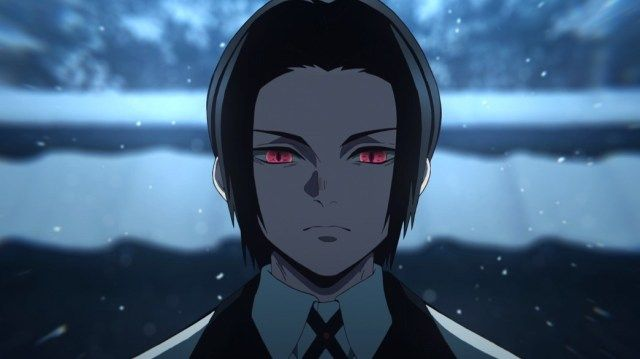 | Kibutsuji Muzan. The primary antagonist of the series, Muzan Kibutsuji (鬼舞辻 無慘, Kibutsuji Muzan) was the first and strongest demon in existence. He used his blood to sire the other demons. He was able to manipulate his cellular structure and frequently disguised himself as different humans of various ages and genders. He would program transplanted cells within demons he directly sired to destroy them if they ever mentioned him by name. He could devour the cells of others to assimilate their abilities and memories as well. |
| 2 | |
Akaza. Holding the position of Upper Three, he is a demon who despises weaklings and offers those he considers strong enough to have his respect the chance to become demons. He was once a human called Hakuji (狛治) who stole as a child to care for his ailing father before he committed suicide to free his burdened son. Hakuji was adopted by a martial artist and trained under him while falling in love with his master’s daughter Koyuki. But Hakuji loses his new family when they were poisoned by a rival dojo who were unable to beat him in a fair fight, slaughtering them single-handily before being turned into a demon by Muzan. |
| 3 | 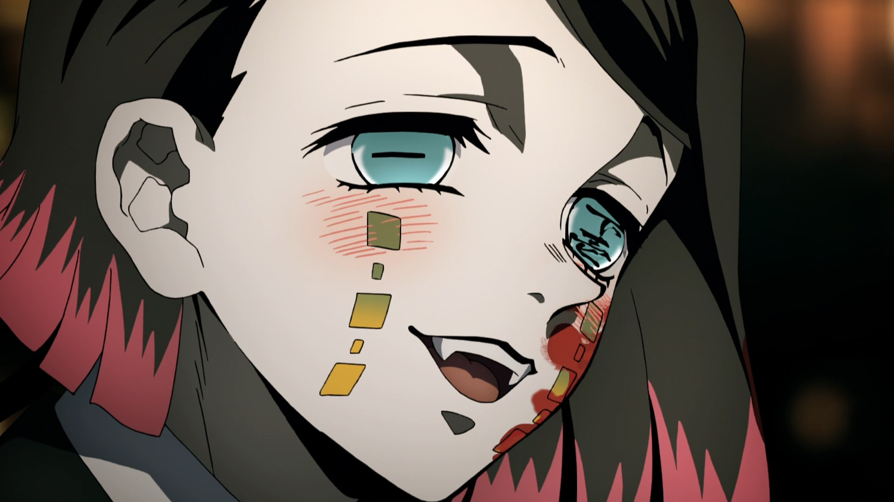 | Enmu. A sadistic demon holding the position of Lower One who is the closest strongest demon to the Upper Ranks and strongly devoted to Muzan, his Blood Demon Art allowing him to enter and manipulate a person's dream so he can essentially kill them. Being the Lower Rank that Muzan spared after he slaughtered the others, Enmu is given the task to kill the Hashira and Tanjiro. Enmu lays a trap for Tanjiro and his friends on a train that he later fuses himself to, only to be killed by the Demon Slayers to his shock. |
| 4 | 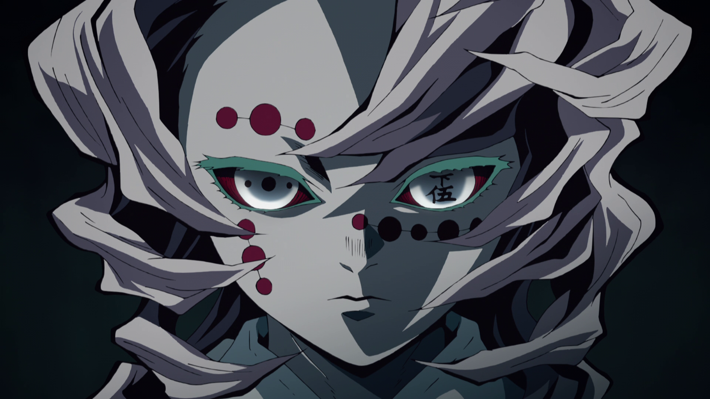 | Rui. A youth-like Demon holding the position of Lower Five, he was originally a sickly child before Muzan transformed him and he later killed his parents in self-defense when they attempted to kill him before taking their own lives. The ordeal caused Rui to forget his parents while receiving Muzan's permission to transform other humans and demons with his blood into a replacement family that he abuses due to his lack of understanding familial bonds. This played in his envy for the Kamado siblings' dedication for each other as they manage to greatly injure him before he was easily killed by Giyu, remembering his parents in his final moments while reunited with them in death. |
| N | Pics | Infotmatoins |
|---|---|---|
| 1 | 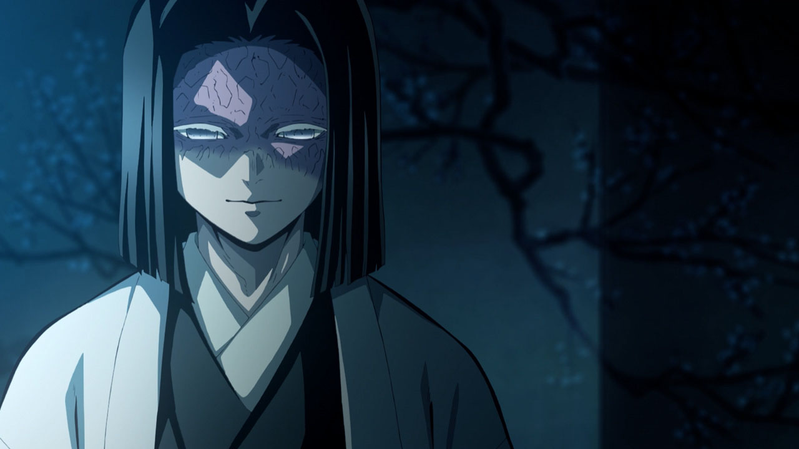 | Random. The 97th leader of the Demon Slayer Corps whose family established the organization. He is a distant relative of Muzan and his entire bloodline was cursed with a disease that slowly kills them before reaching their thirties, possibly because of their connection with Muzan's blood. He sacrificed himself to weaken Muzan with an massive explosion which destroys his house. |
| 2 | 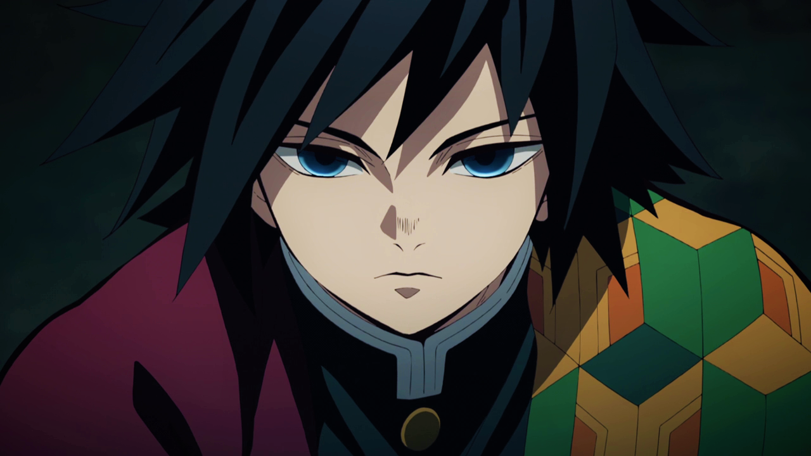 | TomiokaThe current Water Hashira; he is the first Demon Slayer that Tanjiro comes across. He initially tries to kill Nezuko, but reconsiders after seeing her protect an unconscious Tanjiro as he sends them to his mentor Urokodaki in the hopes that Tanjiro could succeed him and possibly cure Nezuko. He does not think of himself as a true Hashira, despite mastering Water Breathing as he considered his fellow apprentice Sabito, who died saving other Demon Slayers-in-training, more suited for the role. |
| 3 | 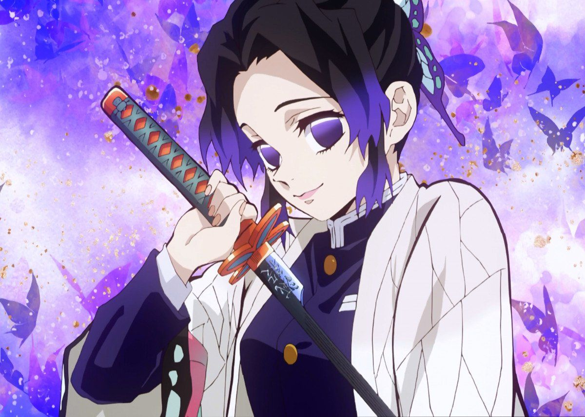 | Bugpiller. The current Insect Hashira. She is rather coolheaded and always has a smile on her face, no matter what situation she is put in. She enjoys teasing others, mostly she likes to annoy Giyu Tomioka, about how no one likes him. Behind her cheerful facade, she harbors a deep rage towards all demons for taking the lives of many of her loved ones, including her older sister by the Upper Two Doma. But Nezuko becomes an exception after learning more about her. |
| 4 | 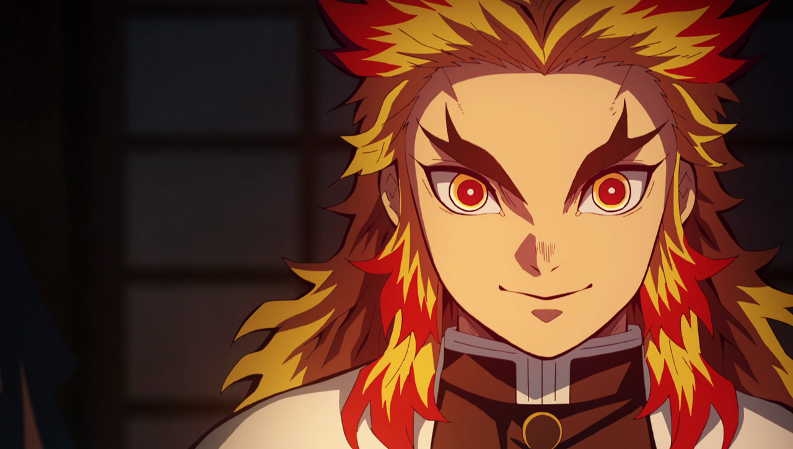 | Rengoku. The current Flame Hashira after inheriting the title from his father Shinjuro, coming off cheerfully eccentric but is pure-hearted and honorable as of his mother instilling him with his moral code of protecting the weak. He was assigned to investigate the Mugen Train with Tanjiro and his friends and helps dispatch Enmu before he is fatally wounded in his fight against Akaza of the Twelve Kizuki. After using his last moments to direct Tanjiro to his father, the youth had the guard of Kyojuro's broken sword installed into his new sword in respect for the Hashira. |
Urokodaki. A former Water Hashira; He is introduced to Tanjiro and Nezuko by his student Giyu. He is initially apprehensive of Tanjiro's kind nature, but agrees to train him. As the training goes on, he grows closer to both Tanjiro and Nezuko, and he sheds tears of joy, when Tanjiro returns from the Demon Slayer exam alive, as he is the first to do so after a long string of deaths. He has since kept a close eye on their growth. He has given his word to the Pillars that if Nezuko were to eat a human, then Tanjiro, as well Giyu and himself would kill her and themselves in atonement.
A demon who has been kidnapping young women. He attempts to consume girls before they go beyond 16 years and "become rotten". He is the target of Tanjiro's first assignment as a Demon Slayer and is eventually killed by him.
A demon and former member of the Twelve Kizuki, Kyogai is known as the "Tsuzumi Demon" (鼓の鬼, Tsuzumi no Oni). He was stripped of his number by Muzan due to slowly losing the ability to eat humans and reaching his "limit". Because of this, he obsessively tries to earn his spot back in the Twelve Kizuki, attacking and eating humans who pass by the Tsuzumi Mansion. Prior to becoming a demon, Kyogai was an unsuccessful poet whose works were rejected by his father. He fights using the tsuzumi drums embedded into his body; striking them would turn rooms around and while changing rooms throughout the house and creating powerful air slashes. Kyogai is slain in a grueling battle by Tanjiro.
A youth-like Demon holding the position of Lower Five, he was originally a sickly child before Muzan transformed him and he later killed his parents in self-defense when they attempted to kill him before taking their own lives. The ordeal caused Rui to forget his parents while receiving Muzan's permission to transform other humans and demons with his blood into a replacement family that he abuses due to his lack of understanding familial bonds. This played in his envy for the Kamado siblings' dedication for each other as they manage to greatly injure him before he was easily killed by Giyu, remembering his parents in his final moments while reunited with them in death.
A sadistic demon holding the position of Lower One who is the closest strongest demon to the Upper Ranks and strongly devoted to Muzan, his Blood Demon Art allowing him to enter and manipulate a person's dream so he can essentially kill them. Being the Lower Rank that Muzan spared after he slaughtered the others, Enmu is given the task to kill the Hashira and Tanjiro. Enmu lays trap for Tanjiro and his friends on a train that he later fuses himself to, only to be killed by the Demon Slayers to his shock.
Yahaba (矢琶羽, Yahaba) A demon who directly serves Muzan. While he believes that he is one of the Twelve Kizuki, he is actually not, as he lacks a number on his eye: the mark of a Kizuki. His power is to manipulate the movement and direction of things using the eyeballs on the palms of his hands. He works together with Susamaru and is killed by Tanjiro.
Susamaru (朱紗丸, Susamaru) A demon who directly serves Muzan. While she believes that she is one of the Twelve Kizuki, she is actually not, as she lacks a number on her eye: the mark of a Kizuki. Her power is in her Temari, which is incredibly hard and heavy. She uses it like a projectile weapon along with Yahaba's ability. She is defeated when Tamayo uses her hypnosis to trigger the curse Muzan put on the demons under his control to kill them should they talk to anyone about him.
Demon Slayer: Kimetsu no Yaiba – The Movie: Mugen Train (Japanese: 劇場版「鬼滅の刃」 無限列車編, Hepburn: Gekijō-ban "Kimetsu no Yaiba" Mugen Ressha-hen), also known as Demon Slayer: Mugen Train or Demon Slayer: Infinity Train, is a 2020 Japanese animated dark fantasy action film[3][4] based on the shōnen manga series Demon Slayer: Kimetsu no Yaiba by Koyoharu Gotouge. The film, which is a direct sequel to the first season of the anime series, was directed by Haruo Sotozaki and written by Ufotable staff members. The film was produced by Ufotable in association with Aniplex and Shueisha. The film was released during the COVID-19 pandemic, premiering on October 16, 2020 in Japan and late 2020 to mid-2021 internationally. It grossed over $503 million at the worldwide box office, making it the highest-grossing film of 2020, the first time a non-Hollywood production topped the annual box office. It set a number of box office records, including becoming the highest-grossing anime and Japanese film of all time.
Tanjiro, Nezuko, Zenitsu, and Inosuke board a train[N 1] to assist the Flame Hashira Kyōjurō Rengoku in his mission to hunt for a demon that has killed many Demon Slayers. Soon after boarding, all of them are enchanted and fall into a deep sleep. Enmu, Lower Rank One of the Twelve Kizuki, instructs four passengers, all suffering from severe insomnia, to enter the Demon Slayers' dreams and destroy their spiritual cores so that they can't wake up again. In exchange, Enmu will allow them a peaceful sleep.During their sleep, Tanjiro and his companions have happy dreams. Tanjiro realizes that he is dreaming and tries to wake up, succeeding after a vision of his father instructs him to kill himself in the dream. At the same time, Nezuko uses her power to sever the intruders' connection, and awaken the passengers. In fear of Enmu, they attack Tanjiro, who knocks them out.While Nezuko awakens the others, Tanjiro confronts Enmu, and in the ensuing battle, beheads him. However, Enmu does not die, and reveals that he fused his head with the train. Kyōjurō instructs Inosuke and Tanjiro to look for Enmu's neck while he, Nezuko, and Zenitsu stay behind to protect the other passengers. Tanjiro and Inosuke find Enmu's neckbone in the engine room and Tanjiro severs it, killing Enmu and stopping the train.However, Akaza, the Upper Moon Three, appears soon after and attacks the Demon Slayers. Kyōjurō fights him alone, and is fatally wounded, although Akaza is forced to flee when the sun begins rising. Tanjiro angrily calls him a coward for running away and declares Kyōjurō the winner of the fight. Kyōjurō encourages Tanjiro and his friends, and dies. The Hashira and Demon Slayer Corps are informed of his death, while Tanjiro and the others mourn him.
Demon Slayer: Kimetsu no Yaiba is a Japanese anime series based on the manga series of the same title, written and illustrated by Koyoharu Gotouge. The second season, titled Demon Slayer: Kimetsu no Yaiba – Entertainment District Arc, was announced on February 14, 2021.[1] The season will be directed by Haruo Sotozaki, with character designs by Akira Matsushima, and animation produced by Ufotable; staff and cast from the first season and Demon Slayer: Kimetsu no Yaiba – The Movie: Mugen Train also returned.[2][3] The season will run in two cours, with the first part titled Demon Slayer: Kimetsu no Yaiba – Mugen Train Arc, a seven-episode version of "Mugen Train" as seen in the film featuring new music and additional animation, which premiered on October 10, 2021.